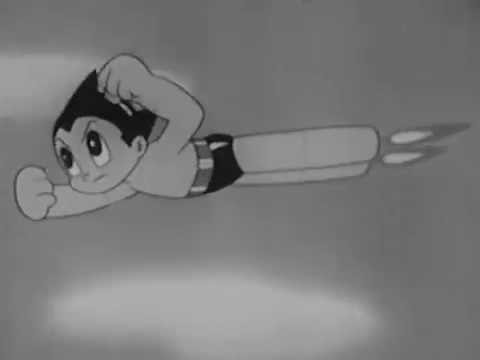
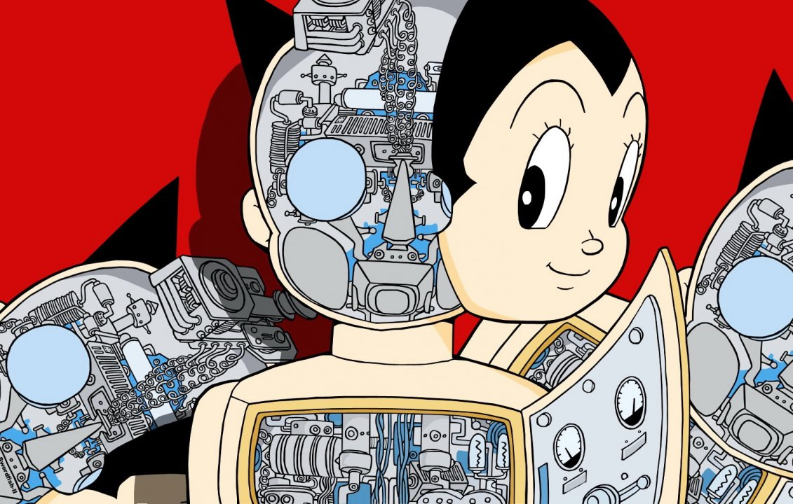

Astro boy
-

Astro Boy is one of the most successful manga and anime in the world and has made Osamu Tezuka most famous in the world.The story follows Astro Boy, an android young boy having human emotions who is created by Umataro Tenma because of the death of his son. Astro boy behave as if he was human.
-

Osamu's prolific output, pioneering techniques, and innovative redefinitions of genres made peopele kook for him as "the Father of Manga", "the Godfather of Manga" and "the God of Manga".Also he is often considered the Japanese equivalent to Walt Disney served as a major inspiration.